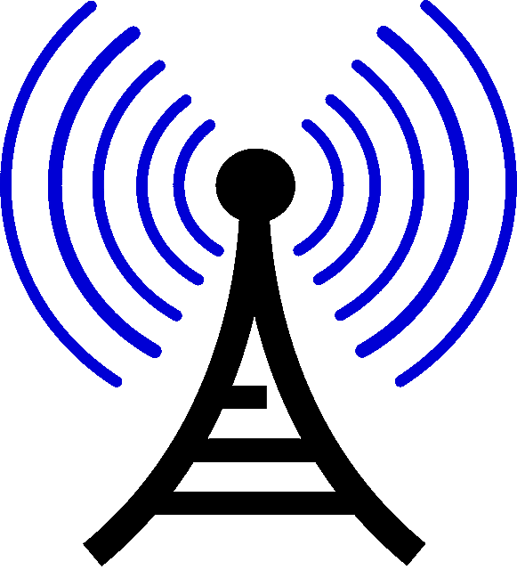

Las señales de radio pueden recorrer grandes distancias, atravesando, incluso, objetos, como edificios, tienen ondas omnidireccionales (es decir, que se propagan en todas las direcciones).
La radiofrecuencia (RF) o Espectro de radiofrecuencia: Se encuentra en una porción del espectro electromagnético en el cual se pueden generar ondas electromagnéticas con una corriente alterna conectada a una antena.
Frecuencia: se encuentra entre 1 GHz y 30 KHz.
Longitud de onda: Entre 1 m y 10 km de amplitud.
o Fácil de ionizar el aire para hacer una trayectoria a través del aire.
o El efecto de piel: Fuerza electromagnética que conduce la corriente del RF a la superficie de conductores.
o Capacidad de atravesar trayectorias con material aislador.
Ventajas
o Alternativa para lugares donde la instalación de cables es difícil.

o Comunicaciones portátiles.
o Generalmente no se necesita licencia.
o Atraviesan objetos.
o Omnidireccionales.
o Grandes distancias.
Desventajas
o Interferencias entre usuarios.
o Nada práctico para grandes velocidades.
o Interferencias por equipo eléctrico.